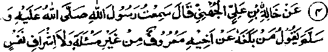
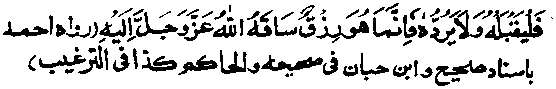

Chapter Six · Section (d): Ahadith on the foregoing subjects (concerning the excellence of Tawakkul)
Hadith 4


Khalid Ibne Ali Radhiallaho anho reported Rasulullah Sallallaho alaihe wasallam as saying: If anyone happens to receive something from his brother Muslim, without his asking for it and without his feeling inwardly greedy for it, he should not reject it but rather accept it, for it is his sustenance which has been sent by Allah Ta'ala.
Note: There are quite a number of Ahadith to the effect that, if anyone receives a gift from someone, without asking for it and without being greedy for it, he should accept it; for its nonacceptance amounts to a rejection of the Bounty of Allah Ta'ala and implies ingratitude towards Him. That is why most of the Sheikhs (Divines) accept gifts from people, even against their own sweet will.
Abdullah Ibne Umar Radhiallaho anho relates: 'At times when Rasulullah Sallallaho alaihe wasallam gave me some gift, I would say,’ O Rasulullah, give it to someone who has more need of it;’ but he said, Take it Take what comes to you from these worldly things when you have neither openly asked for it, nor have had any greed for it. Then make use of it if you can; and if you do not like to use it, give it away as Sadaqah. And, in no circumstances, desire anything that does not come to you on its own’. Saalim son of Abdullah Bin Umar Radhiallaho anho says: It was on account of this Hadith that Ibne Umar Radhiallaho anho would not ask anything from anyone, but if something came to him unasked, he would not refuse it”
A similar incident has been reported of Umar Radhiallaho anho: when Rasulullah Sallallaho alaihe wasallam granted him some gift, but he gave it back to him. When Rasulullah asked him why he had done so, he submitted, "O Rasulullah, you have told us that it is better for us not to take anything from anyone. 'At this Rasulullah Sallallaho alaihe wasallam said, "What I meant was that you should not ask for things from people; but if anything comes to you without asking, it is your sustenance from Allah Ta'ala, bestowed upon you by Him", At this, Umar Radhiallaho anho submitted, "By Him Who holds my soul in His hands, if anything comes to me without asking, I shall accept it". Once Abdullah bin Amr Radhiallaho anho sent, through a messenger a certain amount of money and some cloth as a gift to Aishah Radhiallaho anha. She refused to accept it, saying, "It is not my custom to take anything from anyone". But when the messenger was leaving and had just gone outside the house, she called him back, took the gift from him and said, ‘I have been reminded of what Rasulullah Sallallaho alaihe wasallam said to me once; "O Aishah, if you happen to get something without your asking for it, do accept it, for it is your sustenance that has been sent to you by Allah Ta'ala". Probably this incident pertains to the early period of her life. After this, Aishah Radhiallaho anha used to accept gifts from people. It has been related in various Ahadith that many Sahabah used to present large sums of money to her, which she accepted but, instantly, distributed them among people as Sadaqah.
Wasil Ibne Khattaab Radhiallaho anho says that he asked Rasulullah Sallallaho alaihe wasallam about his prohibition against asking anything from anyone. Rasulullah Sallallaho alaihe wasallam replied, "I forbade you to ask anything from anyone, but if Allah Ta'ala bestows upon you something without your asking for it, do take it; for it is your sustenance sent to you by Allah Ta'ala". Abu Hurairah Radhiallaho anho relates that Rasulullah Sallallaho alaihe wasallam once said, "Anyone who is granted some bounty by Allah Ta'ala (through sOmeone offering it to him as a gift) should accept it; for it is his sustenance sent to him by Allah Ta'ala". Aabid bin Umar Radhiallaho anho relates that Rasulullah Sallallaho alaihe wasallam said: 'Anyone who is presented some gift without having asked for it and without 'Ishraaf lurking in his mind (i.e. without feeling inwardly greedy for it), should accept it and spend liberally on his needs. And, if he does not need it, he should give it to someone who has greater need of it". Abdullah, son of Imaam Ahmad bin Hanbal Rahmatullah alaihe, says, "I asked my father, ‘What is ‘Ishraaf?’ He replied, ‘It consists in your having expectations of receiving a gift from someone or wishing inwardly that such and such person should send you a gift". (Targheeb)
Literally the Arabic word, ‘Ishraaf means to peep. Here it means: a state of mind in which one’s greedy self is on the watch for something to come to him. For example, as Imaam Ahmad bin Hanbal Rahmatullah alaihe puts it, a person who may desire that so and so should do him a favour, is said to have ‘Ishraaf. It is in view of this definition of the term that many Ulama interpret ‘Ishraaf as something tantamount to avarice and greed because, in this state also, one is anxious to get something from people. Allama ‘Aini Rahmatullah alaihe says, "Some Ulama say that ‘Ishraaf signifies,excessive greediness; others are of the view that ‘Ishraaf indicates getting something from a person who gives it away with a heavy heart’.
Explaining the guidelines for accepting a gift that comes without asking for it, Imaam Ghazali Rahmatullah alaihe writes: Three things should be taken into consideration; the gift itself the intention of the giver and the intention of the person receiving it’. In the first place, one should consider and make sure about the nature of the gift. A gift may be refused if one is sure that it has been procured from un-lawful or questionable sources. Secondly, one should make certain about the intention of the giver. That is to say, one should make sure whether he is (i) presenting the thing as a ‘Hadiyyah’ (gift), in the true sense of the word, thereby seeking merely to please his brother Muslim and to win his love for himself;
(ii) intending it to be a ‘Sadaqah’; or,
(iii) giving it simply for fame and ostentation, or for some evil designs. (A reference to these motives will be made in a Hadith, in the following pages).
Now, if it is a ‘Hadiyyah’ (gift), in the true sense, it is part of the Sunnah to accept such gifts; there occur, in the Ahadith, many exhortations to present gifts to one another and to accept them. Such a gift should be accepted, provided there is no likelihood of the receiver coming under heavy obligation; in such a case, he may decline; alternatively he may keep a portion of the gift and return the rest to allay the sense of obligation.' Once, a person presented Rasulullah Sallallaho alaihe wasallam with a ram, some Ghee (butter-oil) and some cheese. He accepted the Ghee and the cheese, but returned the ram. It was a revered custom of Rasulullah Sallallaho alaihe wasallam that he accepted gifts from some persons and declined these from others. Once, he said, I feel inclined to accept a present only from a Quraishi, an Ansari, a Thaqafi, or a Dausi". This remark was occasioned by the following incident. Once a desert Arab presented Rasulullah Sallallaho alaihe wasallam with a young she-camel, in return for which he gave him six young camels, it being a custom with him to make very liberal returns for the gifts. The person was displeased because he thought the return was less than what he had expected. When Rasulullah Sallallaho alaihe wasallam heard about it, he gave a sermon in which he told the people about the incident and said that he felt inclined to accept presents only from people mentioned above. He exempted these tribes because he was confident of their sincerity and devotion to him. (Bad)
It hqs been reported in many Traditions that the Followers (Tabi'een) of the Sahabah used to accept presents sometimes and declined them on other occasions. It is said that Fatah Ibne Shakhraf Mausle Rahmatullah alaihe was given a present of a bag containing fifty Dirhams (silver coins). He said, I have heard that Rasulullah Sallallaho alaihe wasallam once said, "Whoever receives a provision, without his asking for it, but refuses to accept it, is like one who is rejecting his provision sent to him by Allah Ta'ala". He then took a Dirham out of the bag and returned the rest to the donor. Hasan Basri Rahmatullah alaihe (a well-known Tabi‘ee) is also one of the narrators of the Hadith quoted above. Once, however, he declined to accept a bag of Dirhams and a bundle of fine cloth made in Khurasan, which were presented to him as a gift, saying, "Whoever is in my position i.e. entrusted with the task of giving sermons, admonishing people, affording spiritual guidance, etc, and still receives such presents from people, will have nothing to expect when he meets Allah Ta'ala (on the Day of Judgement). For, in accepting such gifts, there is a semblance of receiving worldly gains in recompense for the work of Deen".
Ubaadah Radhiallaho anho narrates: T taught the Qur’an to some persons of the ‘Ashaab-us-Sufiah.’ One of them presented me a bow as a gift. I said to myself, ‘This cannot be reckoned as worldly gain and I may make use of it for fighting in the Path of Allah Ta'ala". Still, I thought I must ask Rasulullah Sallallaho alaihe wasallam about it’. When I asked him about it, he replied, ‘If you want to have a necklace of Fire put on you, accept it.’ (Abu Dawood). It becomes manifest from this Hadith and from what Hasan Basri Rahmatullah alaihe said on the subject that the Ulama and the Sheikhs, who are engaged in delivering sermon and doing other tasks of spiritual guidance, should be far more cautious and strict in the matter accepting gifts. Notwithstanding his strict attitude regarding the acceptance of gifts, Hasan Basri Rahmatullah alaihe used to accept gifts from his intimate friends as, in such cases, there was no likelihood of the gift being in lieu of the work of Deen. It is reported of Ibrahim Taimi Rahmatullah alaihe that he would accept one or two Dirhams from his intimate friends but declined the offer of hundreds of Dirhams from other people. It is said about certain Divines that when one of them was offered a gift he (the donor) was told to keep it with him and consider whether, after accepting his gift, he would hold him (the Divine) in higher esteem than he did before accepting it. If so, he would accept the gift otherwise not.
Imaam Ghazali Rahmatullah alaihe says: "The sign of this (higher esteem) is that the donor should feel dismayed if his gift is not accepted. And, he should feel happy if it is accepted. The giver should regard the recipient as his benefactor". Bishr Rahmatullah alaihe says, "I have never asked a favour from anyone other than Sirri Saqati. I always ask from him because I believe that he is a perfect ‘Zaahid’ (an ascetic). I know for certain that he takes pleasure in giving away things and it weighs upon his mind to retain worldly goods. So, I partake of his favours simply to increase his pleasure".
It is said that a man from Khurasan came to visit Junaid of Baghdad Rahmatullah alaihe and brought, with him, many valuables as a gift for the Sheikh. When Junaid Rahmatullah alaihe said, "Well, I will take it and distribute the things among the needy people, he said, I am not presenting it to you for this purpose; I wish you would spend it on your own requirements (food, drink, etc.)" Junaid replied, "How can I expect to live long enough to exhaust all this fortune? "The man said, I do not want you to spend it on vinegar and vegetables. (These are cheap and so it would take long to spend the entire amount of money). I wish that you would spend it for buying sweets and other delicacies of food’. Junaid Rahmatullah alaihe then accepted the gift. At this the Khurasanite said, "My debt of gratitude to you is greater than what I owe to anyone else in Baghdad, to which the Sheikh replied, ‘One must accept a gift presented by a person like you."(the discourse on gifts is concluded here).
The second category of material favours are those which fall under the heads ‘Zakaat’ (the obligatory poor-due) and Sadaqaat’ the supererogatory charities. If what is offered, falls under the head ‘Zakaat,’ the receiver should, before accepting it, make sure whether it is lawful for him to take it. (This subject has been treated, in some detail, at the end of the section on Zakaat in the first part of the book). And if the thing presented falls under the head of ‘Sadaqaat’, the receiver should make sure why the person is giving it to him. If he is giving it to him because he considers him to be a pious man, the receiver should examine himself to see whether he is secretly committing a sin which, if known to the donor, would have caused such repugnance in his mind that he would never have given him anything. If this is so, it becomes unlawful for him to accept this ‘Sadaqah’. For, it is like an ignorant person being presented a gift because people regard him an Alim, or a non-Sayyed (a Sayyed is a descendant of Rasulullah). In such cases, it is strictly forbidden to receive gifts or Sadaqaat from people. And, if a person is giving something just for show or for fame, one should, in no circumstances, accept his gift Rasulullah Sallallaho alaihe wasallam forbade taking the food of vain-glorious persons.-Sufyaan Thauri Rahmatullah alaihe declined to accept certain presents, saying, I would accept it if I were certain that the donor would not talk of it boastfully, afterwards.1'
Some Divines when they were criticised for not accepting gifts, said, ‘We decline gifts out of pity for the donors, because if we accept their gifts, they talk of it boastfully to the people and thus they lose their reward in the Akhirah. So, why should we allow their wealth to be wasted, without earning them any Heavenly rewards". The third point to be considered is the intention of the person receiving the benefit. If he is a needy person, and the property is not tainted as mentioned above, it is better for him to accept it. For, Rasulullah Sallallaho alaihe wasallam once remarked to the effect that; "The one who receives a material benefit (from a brother Muslim), provided he is really in need of it, also earns blessings, his share of blessings being no less than that of the giver."
Rasulullah Sallallaho alaihe wasallam also said, "He who is granted some material things by Allah Ta'ala (through a person presenting it to him), without his asking for it and without Ishraaf in his mind, should accept it, for it his own sustenance which has been bestowed upon him by Allah Ta'ala". I have just quoted a number of Ahadith on this subject. The Ulama say, "It is feared that the one who does not accept a gift which comes to him without his asking for it, would, on other occasions, feel obliged to ask for things which will not be given to him.’
It is said that Sirri Saqati Rahmatullah alaihe would often send presents to Imaam Ahmad bin Hanbal Rahmatullah alaihe, which he would gladly accept. Once, however, the Imaam declined to accept his gift. Sirri Rahmatullah alaihe said, "Ahmad, the burden of rejecting a Hadiyyah is greater than the one in accepting it" The Imaam Rahmatullah alaihe said, "Could you repeat what you have just said". The Sheikh repeated his remarks. The Imaam then said, "I did not accept it as I had sufficient provisions for a month. Kindly keep it with you a. month, after which you can bestow it upon me." Some Ulama are of the view that whoever declines a favour, notwithstanding his need, is punished by Allah Ta'ala’ one way or the other, such as becoming greedy or being forced to accept these things of questionable origin or some other affliction of the kind. If the person who is offered a ‘Hadiyyah’ does not need it, he may consider, that in case he lives by himself and has no social obligations, whether he should keep with him more than what suffices him for his present needs. For, keeping things in excess would amount to yielding to one’s selfish desires and it could lead him in to a trial and some mischief. If such a person is at all obliged to accept a gift, for one reason or the other, he should distribute it among others.
(As stated above), Imaam Ahmad bin Hanbal Rahmatullah alaihe declined the gift presented by Sirri Saqati Rahmatullah alaihe because he did not heed the money himself, and also, he did not like to occupy himself in distributing it among the people. The Imaam was fully aware of the difficulties involved in such matters and prudence demands that one may keep away from possible perils, as no one can feel secure anytime from the treachery of Shaitan.
A resident of Makkah Mukarramah narrates his story thus: "I had some Dirhams which I had kept for spending in the Path of Allah. I happened to listen to the invocation of a Dervish who, after having made ‘Tawaaf (circumambulation of the Ka’bah) was clinging to the curtains of the Ka“bah and praying to Allah Ta'ala in very low tones, thus: ‘O Allah! Thou knowest that 'I am hungry. Thou knowest that I have no clothes to put on. O! Thou Who seest everyone but to Whom no one can see! I turned round to look at him and saw that he was wearing two worn out and ragged sheets of doth, which only just covered his body. I said to myself; Who can be more deserving than this Dervish for receiving my Dirhams! I went over to him and presented to him my entire collection, out of which he took only five Dirhams and returned the rest saying, "Four Dirhams can buy me two sheets of cloth and one Dirham is sufficient to buy me food for three days”. The following night I saw him again, dressed in two sheets of new cloth. I felt suspicious of him. He also noticed me and caught me by the hand. We began to make Tawaaf together while I felt that, in the course of all the seven rounds of Tawaaf, we were walking over mineral wealth—like gold, silver, rubies, jewels, diamonds, etc. I could see and feel these valuables moving under my feet, though all the other people could not see them. The Dervish then said to me, "Allah Ta‘ala has bestowed all these bounties upon me but I do not like to spend out of these treasures. I always receive Hadiyyah (a gift) from the people and spend them on my needs, because it is beneficial for their souls and, by virtue of giving away things as Sadaqah, they earn blessings of Allah Ta'ala".
I have related all these incidents to show that accepting, from people, more money than what one needs, may lead one into trials and temptations. Extra wealth is always granted by Allah Ta'ala as a test to see whether or not the person receiving it will spend it with propriety. But receiving as much as only just suffices for one’s needs is a blessing of Allah Ta'ala and one should learn to distinguish between the trials and blessings of Allah Ta'ala Who say:
"Lo! We have placed all that is on the earth as an ornament thereof that We may try them, which of them are best in conduct. Lo! And We shall make all that is therein a barren mound (without growth or herbage). (The trial is meant to distinguish those who perform virtuous deeds from those who do not, i.e. Allah Ta'ala puts them to trial to see whether they will be fascinated by the glamour of the world and become forgetful of their Creator or turn away from the adornments of the world and engage in devotion to Allah Ta'ala). (al-Kahf: 7)
Rasulullah Sallallaho alaihe wasallam said: ‘The son of Adam has a right only to the following three: sufficient food to keep his back straight, a garment with which to cover his body and a house to live in (which only just suffices for his needs). Whatever exceeds these three is wealth (regarding which he will have to face reckoning on the Day of Judgement).’ So, anyone possessing enough money for these three necessities of life will earn virtues in the Hereafter and the one keeping in excess will, at least face a reckoning, even if he has not disobeyed Allah Ta‘ala in procuring it or spending it. And he who keeps extra amount and also disobeys Allah Ta'ala with regard to it, will have to suffer punishment in the Hereafter. Whatever exceeds one’s needs should, therefore, be distributed among the needy people.
These prohibitions and precautions are meant for those who live alone by themselves. For a person having many social obligations, or one possessing a generous nature or one who associates with a number of Dervishes and pious people and, therefore, feels obliged to provide for their needs, there is no harm in accepting donations from people, even though these exceed his immediate requirements. Such persons should, however, distribute the donations among the needy people, immediately after receiving them. Keeping extra amount of money in possession, even for a night, may breed temptation, distract one’s mind from devotions or make one niggardly in spending money for the cause of Allah Ta'ala. Such a person may also borrow money from people and spend it for collective needs-trusting in Allah Ta'ala and feeling confident that Allah Ta'ala will arrange for. the payment of his debts. (Ihyaa)